Deep Learning
A Journey to Transformers
ChatGPT
Chat Generative Pre-Trained Transformer
Decoder-Only Transformer
Question
How can I learn about the models used in ChatGPT?
Is there a pathway for me to build the skills needed to learn how to create my own ChatGPT?
Deep Learning
Deep Learning
Neural Networks
Recurrent Neural Networks
Long-Short Term Memory
Word Embeddings
Encoder-Decoder Model
Attention Models
Transformers
Deep Learning
What is Deep Learning?
Classical Definition
The act of using composite functions to predict an outcome variable \(Y\).
Modern Definition
The use of backpropagation to train models.
Our Goal
Given Data \(\boldsymbol X\) and its corresponding \(\boldsymbol Y\), find the function \(f\) with parameters \(\boldsymbol \theta\):
\[ Y = f(\boldsymbol X; \boldsymbol \theta) \]
Characterizing \(f\)
Machine Learning Techniques:
- Linear Regression
- Polynomial Regression
- Nonlinear Models
- Spline Functions
- Tree-Based Models
- Support Vector Machines
- Deep Learning Models
- Nueral Networks
Neural Networks
Deep Learning
Neural Networks
Recurrent Neural Networks
Long-Short Term Memory
Word Embeddings
Encoder-Decoder Model
Attention Models
Transformers
Neural Network Composition
- Inputs: A set of characteristics in the data that we use to predict the outcome of interest
- Outputs: A set of variables (may be one) we wish to predict
- Hidden Layers: A set of functions that will transform the data such that it can better predict the outputs
- Each hidden layer will has nodes that indicates the transformation
Neural Networks
\[ Y = f(\boldsymbol X; \boldsymbol \theta) \]
Regression Neural Network
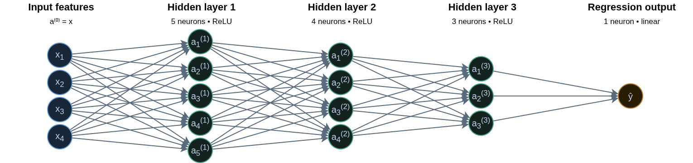
Classification Neural Network
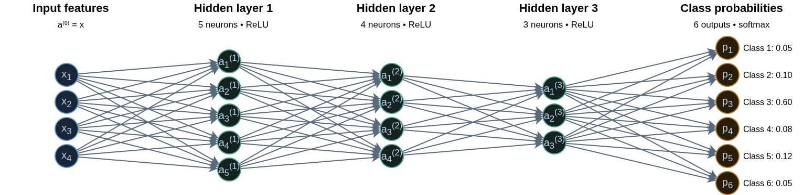
Hidden Layer 1
With \(p\) predictors of \(X\):
\[ a^{(1)}_k(X) = A^{(1)}_k = g\left\{\alpha_{k0} + \sum^p_{j=1}\alpha_{kj}X_{j}\right\} \] for \(k = 1, \cdots, 5\) nodes.
Hidden Layer 2
\[ a^{(2)}_l(X) = A^{(2)}_l = g\left\{\beta_{l0} + \sum^5_{k=1}\beta_{lk}A^{(1)}_{k}\right\} \] for \(l = 1, \cdots, 4\) nodes.
Hidden Layer 3 +
\[ a^{(3)}_m(X) = A^{(3)}_l = g\left\{\gamma_{m0} + \sum^4_{l=1}\gamma_{ml}A^{(2)}_{l}\right\} \] for \(m = 1, \cdots, 3\) nodes.
Output Layer Regression
\[ f(X) = \hat y = \delta_{0} + \sum^3_{m=1}\delta_{m}A^{(3)}_m \]
Output Layer Classification
\[ f(X)_o = \hat y_o = \delta_{0o} + \sum^3_{m=1}\delta_{0}A^{(3)}_m \]
Activations Function \(g(\cdot)\)
Sigmoidal: \(g(z) = \frac{1}{1+e^{-z}}\) (nn_sigmoidal)
ReLU (rectified linear unit): \(g(z) = (z)_+ = zI(z\geq0)\) (nn_relu)
Hyperbolic Tangent: \(g(z) = \frac{\sinh(z)}{\cosh(z)} = \frac{\exp(z) - \exp(-z)} {\exp(z) + \exp(-z)}\) (nn_tanh)
Otherwise, the neural network is just an overparameterized linear model.
Optimizer
The optimizer is the mathematical algorithm used to find the numerical values for the parameters \(\alpha\), \(\beta\), \(\gamma\), and \(\delta\).
The most basic algorithm used in gradient descent.
Recurrent Neural Networks
Deep Learning
Neural Networks
Recurrent Neural Networks
Long-Short Term Memory
Word Embeddings
Encoder-Decoder Model
Attention Models
Transformers
Recurrent Neural Networks
Recurrent Neural Networks are designed to analyze input data that is sequential data.
An RNN can accounts for the position of a data point in the sequence as well as the distance it has to other data points.
Using the data sequence, we can predict and outcome \(Y\).
RNN Model
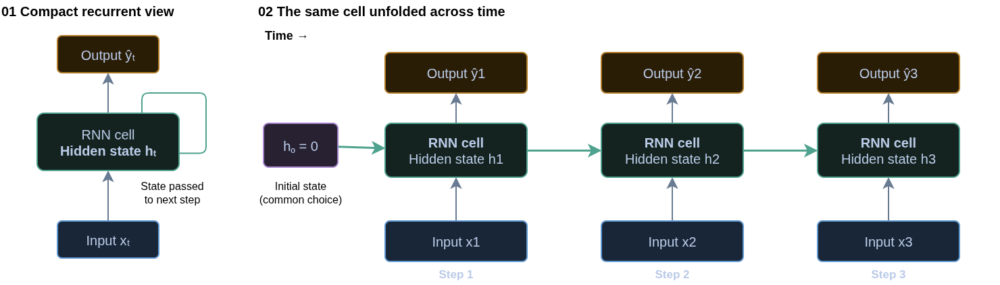
RNN Hidden State
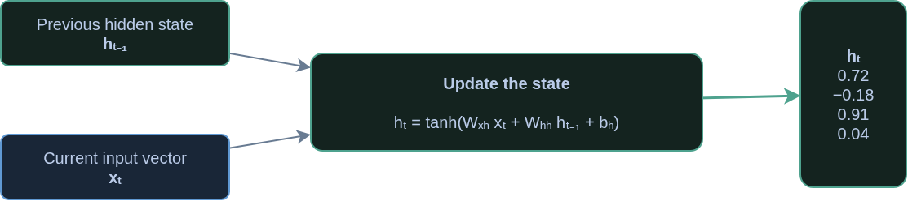
Inputs and Outputs
- With Time-Series data, the data acts as both inputs and outputs.
- There is a usually a lead-up in the input before we get an output.
Given the Data
\[ X_{(0)}\rightarrow X_{(1)}\rightarrow X_{(2)}\rightarrow \cdots\rightarrow X_{(J-1)}\rightarrow X_{(J)} \]
Data Point 1
Input
\[ X_{(0)}, X_{(1)}, X_{(2)}, X_{(3)}, X_{(4)}, X_{(5)} \]
Output
\[ X_{(6)} \]
Data Point 2
Input
\[ X_{(1)}, X_{(2)}, X_{(3)}, X_{(4)}, X_{(5)}, X_{(6)} \]
Output
\[ X_{(7)} \]
Data Point 3
Input
\[ X_{(2)}, X_{(3)}, X_{(4)}, X_{(5)}, X_{(6)}, X_{(7)} \]
Output
\[ X_{(8)} \]
Data Point 4
Input
\[ X_{(3)}, X_{(4)}, X_{(5)}, X_{(6)}, X_{(7)}, X_{(8)} \]
Output
\[ X_{(9)} \]
Data Point 5
Input
\[ X_{(3)}, X_{(4)}, X_{(5)}, X_{(6)}, X_{(7)}, X_{(8)} \]
Output
\[ X_{(9)} \]
Long-Short Term Memory
Deep Learning
Neural Networks
Recurrent Neural Networks
Long-Short Term Memory
Word Embeddings
Encoder-Decoder Model
Attention Models
Transformers
Problems with RNN
- Recurrent Neural Networks suffer from exploding or disappearing gradient due the unfolding.
LSTM
The Long Short-Term Memory approach is used to conteract the issues with gradients by adding a “memory” structure to the nuerons.
This is done by incorporating 2 pathways, a long-term and short-term pathway.
LSTM Components
The creation of the 2 pathways are constructed using 3 “gates”:
- Input Gate
- Output Gate
- Forget Gate
Additionally, LSTM uses sigmoid and hyperbolic tangent activation functions to see which values will be incorporated into the pathways.
Forget Gate
The forget gate decides what information is useful from the long-term memory, and what information should be forgotten. The function below states what percent of the long-term memory should be remembered. \[ f_t = \sigma\left(\boldsymbol W_f [h_{t-1}, x_t] + b_f\right) \]
- \(W_f\) is the weighting matrix full of parameters
- \(b_f\) is the bias term
Input Gate
The input gate controls how the long term memory should be modified based on both the short-term memory and the new input. The \(i_t\) function tells us what percent should be remembered, and \(j_t\) tells us what to remember. \[ i_t = \sigma\left(\boldsymbol W_i [h_{t-1}, x_t] + b_i\right) \]
\[ j_t = \tanh\left(\boldsymbol W_j [h_{t-1}, x_t] + b_j\right) \]
- \(W_i\) and \(W_j\) is the weighting matrix full of parameters
- \(b_i\) and \(b_j\) is the bias term
Long-term Memory
This is how the long-term memory is modified
\[ C_t = f_t \bigodot C_{t-1} + i_t \bigodot j_t \]
- \(\bigodot\) is the element-wise multiplication of the vectors
Output Gate
The output gate tells us how is the short-term memory is updated. This is dony by figuring out what percent will be used from the new long-term memory.
\[ o_t = \sigma\left(\boldsymbol W_o [h_{t-1}, x_t] + b_o\right) \]
- \(W_o\) is the weighting matrix full of parameters
- \(b_o\) is the bias term
Short-term Memory
The short-term memory is costructed by combining the output gate and new long-term memory. \[ h_t = o_t\tanh\left(C_t\right) \]
This is also the new predicted value.
LSTM Model
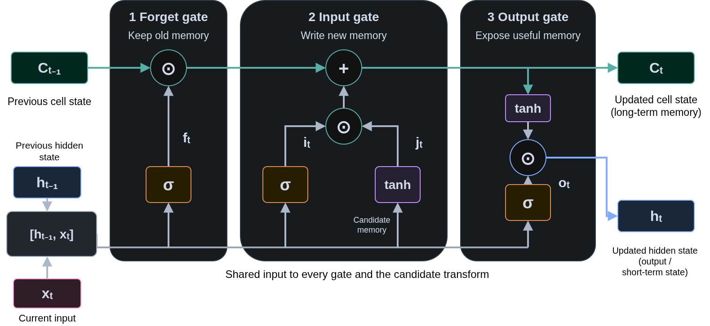
LSTM Model
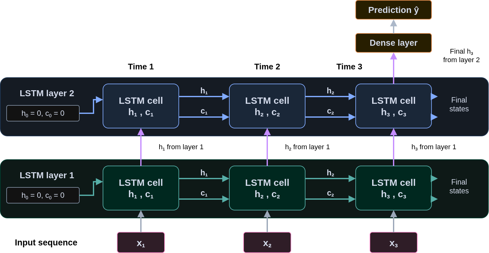
Word Embeddings
Deep Learning
Neural Networks
Recurrent Neural Networks
Long-Short Term Memory
Word Embeddings
Encoder-Decoder Model
Attention Models
Transformers
Phrase

All models are wrong,
some are useful!
How do we input this into a neural network?
Word embeddings
A word embedding represents a word as a vector of learned numbers.
\[ \text{embedding}(\text{cat}) = \mathbf{u} = \begin{bmatrix} 0.8 & 0.3 & -0.2 & 0.6 \end{bmatrix} \]
- Words used in similar contexts often have similar vectors.
- Each coordinate represents a learned feature.
- Individual coordinates usually have no simple interpretation.
Word Embedding (Dog)
\[ \text{embedding}(\text{dog}) = \mathbf{v} = \begin{bmatrix} 0.1 & 0.3 & 0.2 & 0.7 \end{bmatrix} \]
Comparing embeddings
Cosine similarity compares the directions of two nonzero vectors:
\[ \operatorname{similarity}(\mathbf{u}, \mathbf{v}) = \frac{\mathbf{u}^{\mathsf T}\mathbf{v}} {\|\mathbf{u}\|\,\|\mathbf{v}\|} \]
What Are Tokens?
- A token is a unit of text that a language model processes.
- A token may represent:
- An entire word:
cat - Part of a word:
playanding - A punctuation mark:
!
- An entire word:
- A tokenizer converts text into a sequence of tokens.
Note
Tokens are not always words. The exact split depends on the tokenizer.
From Text to Token IDs
Before text enters a Transformer, the tokenizer splits it into tokens and assigns each token an integer ID.
Illustrative example:
- Each ID identifies an entry in the tokenizer’s vocabulary.
- Spaces may be included within tokens.
Why Use Subword Tokens?
Many tokenizers use subword tokenization: common words may remain whole, while less common words are split into smaller pieces.
Illustrative splits:
| Text | Possible tokens |
|---|---|
cat |
cat |
playing |
play, ing |
unhappiness |
un, happi, ness |
Subword tokens help models:
- Represent many words using a manageable vocabulary.
- Process unfamiliar words by splitting them into smaller pieces.
- Reuse pieces that occur across different words.
Encoder-Decoder Model
Deep Learning
Neural Networks
Recurrent Neural Networks
Long-Short Term Memory
Word Embeddings
Encoder-Decoder Model
Attention Models
Transformers
Encoder-Decoder Models
The purpose of Encoder-Decoder models are designed to translate a sequence from one form to another.
Translate…
All models are wrong,
some are useful!
To Gen Alpha
All models are lowkey cap, but some still slap.
To Boomer
All models are full of baloney, but some are worth a darn.
Encoder-Decoder Models
Encoder-Decoder models are designed to take in a sequence, conduct mathematical functions, and transform it to a new sequence. Commonly known as seq2seq problems.
Encoder
- The Encoder component is designed to handle the input sequence and model it with numerical values.
- Converts words (or other sequences to numbers) to embeddings
- Computes numberical values in an LSTM
- Constructs the Long-Term and Short-Term Memory to be used in the decoder
- Known as the Context Vector
Decoder
The Decoder component takes the inputs from the long-term and short-term memory of the encoder component and inputs it into a new LSTM cell
The LSTM cell will then predict the first value (word) of a sequence.
The word perdicted will then be used for a new LSTM cell to predict the next word.
The process continues until an
<EOS>token (end of sequence) is produced.
Encoder-Decoder Model
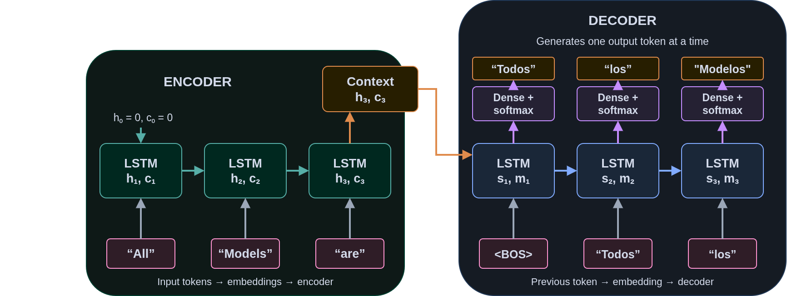
Attention Models
Deep Learning
Neural Networks
Recurrent Neural Networks
Long-Short Term Memory
Word Embeddings
Encoder-Decoder Model
Attention Models
Transformers
Attention Models
Attention models modify the Encoder-Decoder model by incorporating what is known as attention in the model.
Attention is defined as incorporating the inputs short-term memory from the encoder model to the decoders inputs.
Attention Model
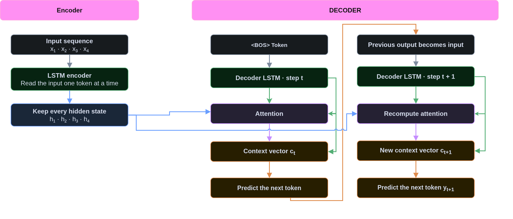
Transformers
Deep Learning
Neural Networks
Recurrent Neural Networks
Long-Short Term Memory
Word Embeddings
Encoder-Decoder Model
Attention Models
Transformers
Attention is All You Need!
In 2017, Google Researchers published a paper Attention is all you need indicating that the attention from encoder-decoder models is all you need for translation. They proposed a new framework to incoporate the attention-only models, Transformers.
Why Attention?
A basic recurrent encoder–decoder summarizes an input sequence in one fixed-length vector. This can create a bottleneck for long sequences.
Transformers gives the decoder access to every encoder output.
Transformers Encoder Architecture
- Take tokens and convert the to embeddings
- Apply a mathematical formula to indicate the position for each token
- Apply the self-Attention component
- Compute 3 initial vectors for each token: Queries, Keys, and Values
- Conduct Vector Operations to obtain the Self-Attention component for each token in the encoder
- Combine Self-Attention with Word Embedding and Positional Encding, called final vector
Transformer Decoder Architecture
- Begin with an SOS Token (\(T_0\))
- Convert token to word embeddings
- Apply a mathematical formula for the positional encoding
- Apply the self-Attention component
- Compute 3 initial vectors for each token: Queries, Keys, and Values
- Conduct Vector Operations to obtain the Self-Attention component for each token in the decoder
- Combine Self-Attention with Word Embedding and Positional Encding
- Create a new Query (\(Q_n\)) vector for the decoder tokens
- Using the final vector from the tokens in the encoder, compute new vectors for Key (\(K_n\)) and Values (\(V_n\))
- Combine the compute the cosine of similarity between \(Q_n\) and \(K_n\), called \(S_n\)
- Combine \(S_n\) with \(V_n\) to create the Encoder-Decoder Attention (ECA) Vector
- Use ECA in a neural network and predict the next token, \(T_1\).
- Repeat steps 2 through 10 until EOS token is produced
Positional Encoding
Positional encoding adds token-order information before self-attention.
- A token embedding represents a token’s identity, \(T_i\).
- A positional encoding represents its location in the sequence \(P_i\).
\[ PE_i = T_i + P_i \]
- A neural network is used to convert the tokens to numbers.
- A combination of sine and cosine functions are used to find the position.
Queries, Keys, and Values
Self-Attention compares a query with keys, then combines the corresponding values, for all tokens.
| Component | Role |
|---|---|
| Query \(Q_t\) | Represents the information needed at output step \(t\) |
| Key \(K_t\) | Represents input position \(t\) for comparison |
| Value \(V_t\) | Supplies information for the context vector |
Basic Transformer
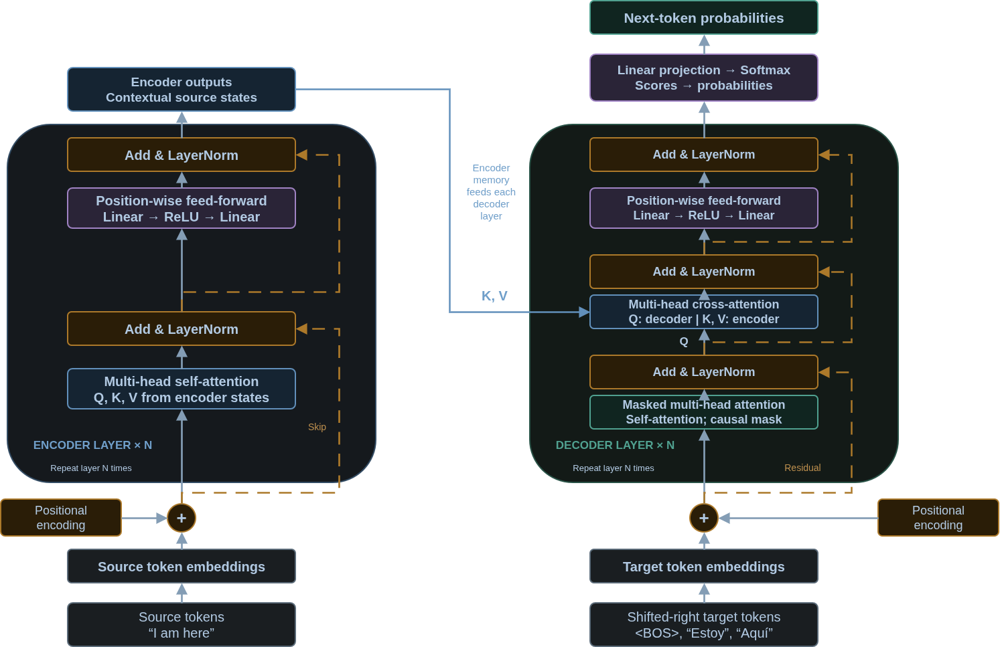
Transformer - Encoder
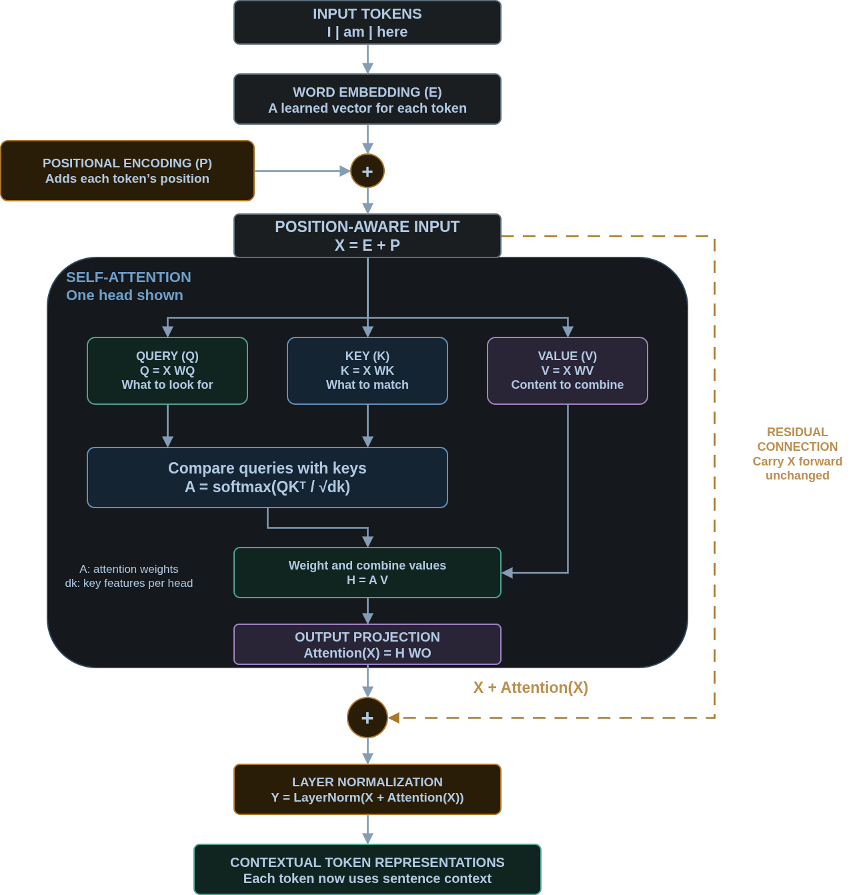
Transformer - Decoder
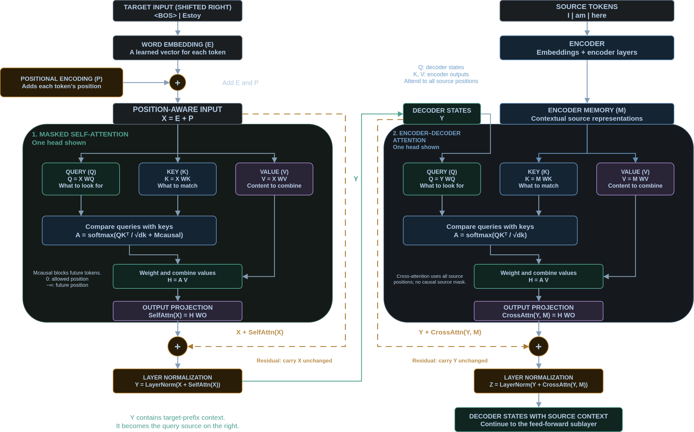
Transformer - Translation
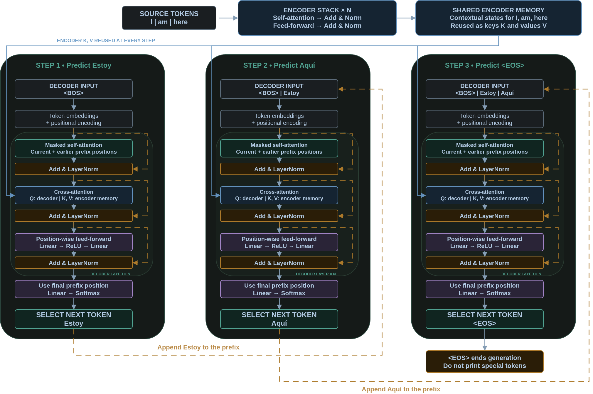
What Are Transformers?
Transformers are the main architecture used in Large Language Models.
ChatGPT and Claude primarily used Decoder-Only Models that need to predict several tokens.
Where can I learn more?
Math 408
Other Useful Resources